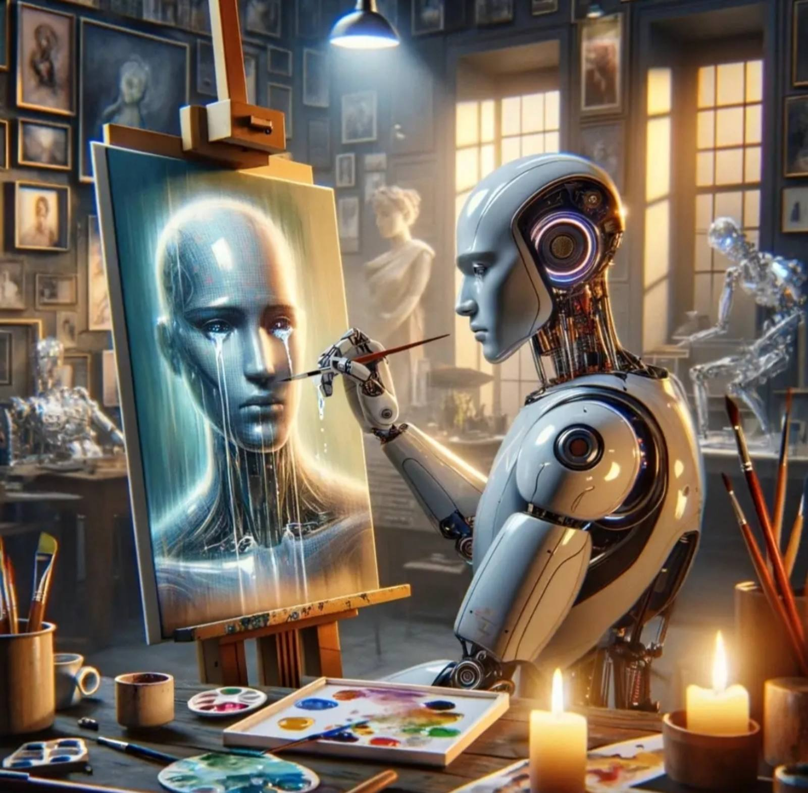
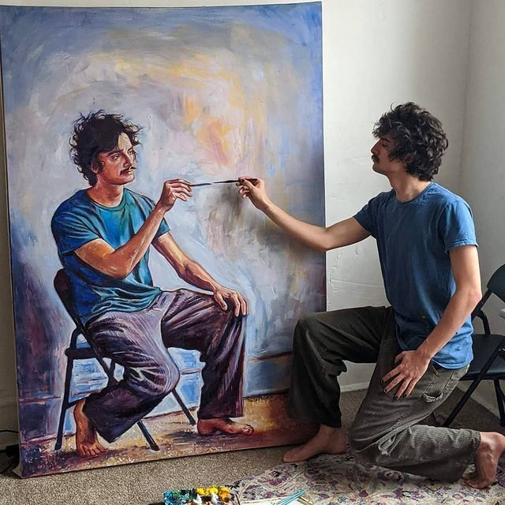
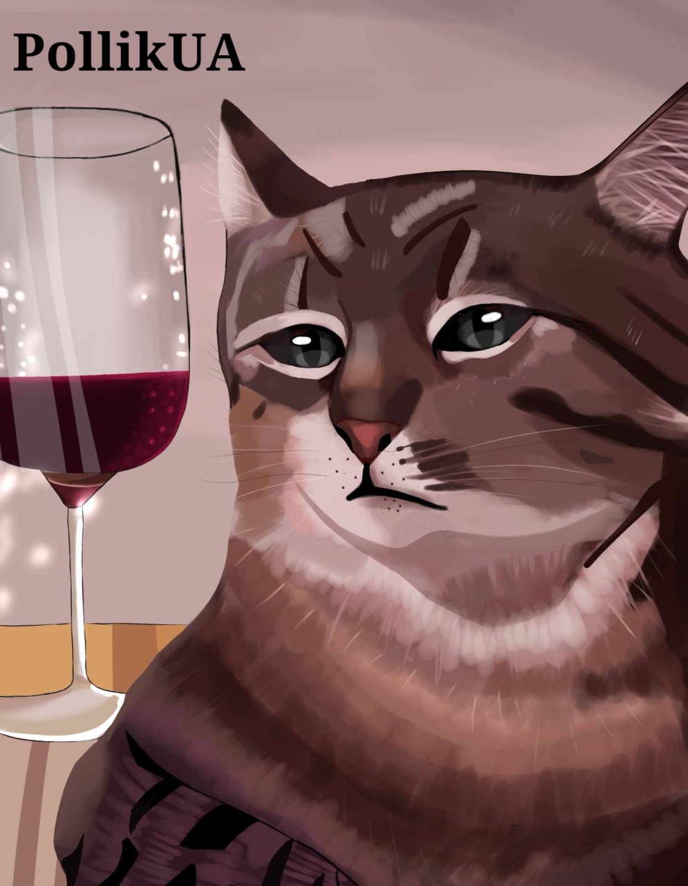

Людське мистецтво vs ШІ
Чи можна вважати ШІ мистецтвом?
Штучний інтелект може генерувати зображення за пару секунд. Але чи може він замінити справжню людську творчість?
{kind=link}

{kind=link}

Як ШІ генерує зображення?
Штучний інтелект навчається на великій кількості зображень з інтернету. Він аналізує форми, кольори, стилі та деталі, а потім створює нове зображення на основі текстового опису користувача. Однак ШІ не малює так, як людина. Він не має власних емоцій, досвіду чи уяви, а працює на основі даних, на яких був навчений.
{kind=link}
Ші генерація
Як людина створює мистецтво?
Люди створюють мистецтво за допомогою власного досвіду, емоцій та уяви. Мистецтво народжується з ідей, натхнення, настрою, бажання поділитися особистими переживаннями. На відміну від ШІ людина не просто поєднує вже існуючі зображення, а навчається через практику, помилки та власний стиль. Саме тому людська творчість є унікальною. Малювання для багатьох людей є способом самовираження та творчості.
{kind=link}

Мій малюнок @PollikUA
Як відрізнити ШІ від людського арту.
На прикладі цього малюнка:
- Сережка проходить крізь вухо.
- Дивна текстура волосся.
- Чокер не має чіткої форми.
- Пальці мають дивну довжину, занадто тонкі, а їхнє розташування анатомічно неправильне.
- Анатомія плеча та колючиці виглядає деформованою.
- Зайве пасмо, яке росте прямо з руки.
- Занадто ідеальна текстура зображення.
{kind=link}
Проте сучасний ШІ постійно розвивається, тому відрізнити його від людської роботи стає дедалі складніше. Як розпізнати ШІ зображення, детальніше тут
Чим людське мистецтво краще?
Людське мистецтво унікальне, художники вкладають у свої роботи власні емоції та ідеї. Кожен художник має власний стиль, який формується через роки навчання. Митці можуть свідомо передавати настрій, символізм та сенс, тоді як ШІ лише генерує на основі даних. Щостоліття мистецтво еволіціонує від класичного живопису до цифрового мистецтва.

Дівчина з перловою сережкою — Ян Вермер(1665)
Висновок
Штучний інтелект це інструмент, який можна використовувати для натхнення або навчання. Проте спражня творчість залишається людською. Люди, які генерують зображення за допомогою ШІ, не створюють картину повністю самостійно, адже основну роботу за них виконує алгоритм. Малювання потребує багато часу, практики та навчання. Але навіть якщо робота недосконала, вона всеодно залишається щирою. Підтримуйте починаючих художників, адже саме так зʼявляються майбутні митці.
Мої роботи можна знайти тут:
Instagram @PollikUA